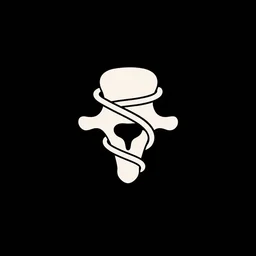
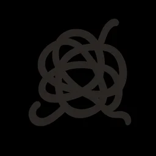
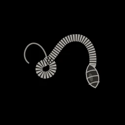
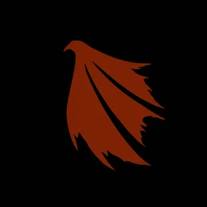

Abyssus Superior
Via Lactea Inferior
For makers. A signal in the dark.Answer it.
Strigoi Sideral
Sepulchered in Carpathian soil, clad in smoky wings that bloom toward the inverted abyss, unfolding like a veil of unbelonging. Strigoi summons creators from the realms of freezing Alienation and eclipsed Easternness: those bound to the soil, yet straining for the void, caught in the whir of the vanishing patagia.
Textrina Siderum
When the Stars are Right
-

Ileana C. Bone & wire jewelry Confirmed -

Studio Moroi Deconstructed knitwear Invitation sent -

TexxturedBeest Jewelry and knitwear -

Vârcolac Atelier Ritual outerwear - One more voice being scouted
Specimens entering the vault
 FIG. 01 — WINGED CLOAK
FIG. 01 — WINGED CLOAK
Nyx Mantle
Vârcolac Atelier Edition of 3 FIG. 02 — VERTEBRA WIRE
FIG. 02 — VERTEBRA WIRE
Vertebra Collar
Ileana C. Unique FIG. 03 — MOLTED KNIT
FIG. 03 — MOLTED KNIT
Molt Sweater
Studio Moroi Pre-order FIG. 04 — BOUND BONE
FIG. 04 — BOUND BONE